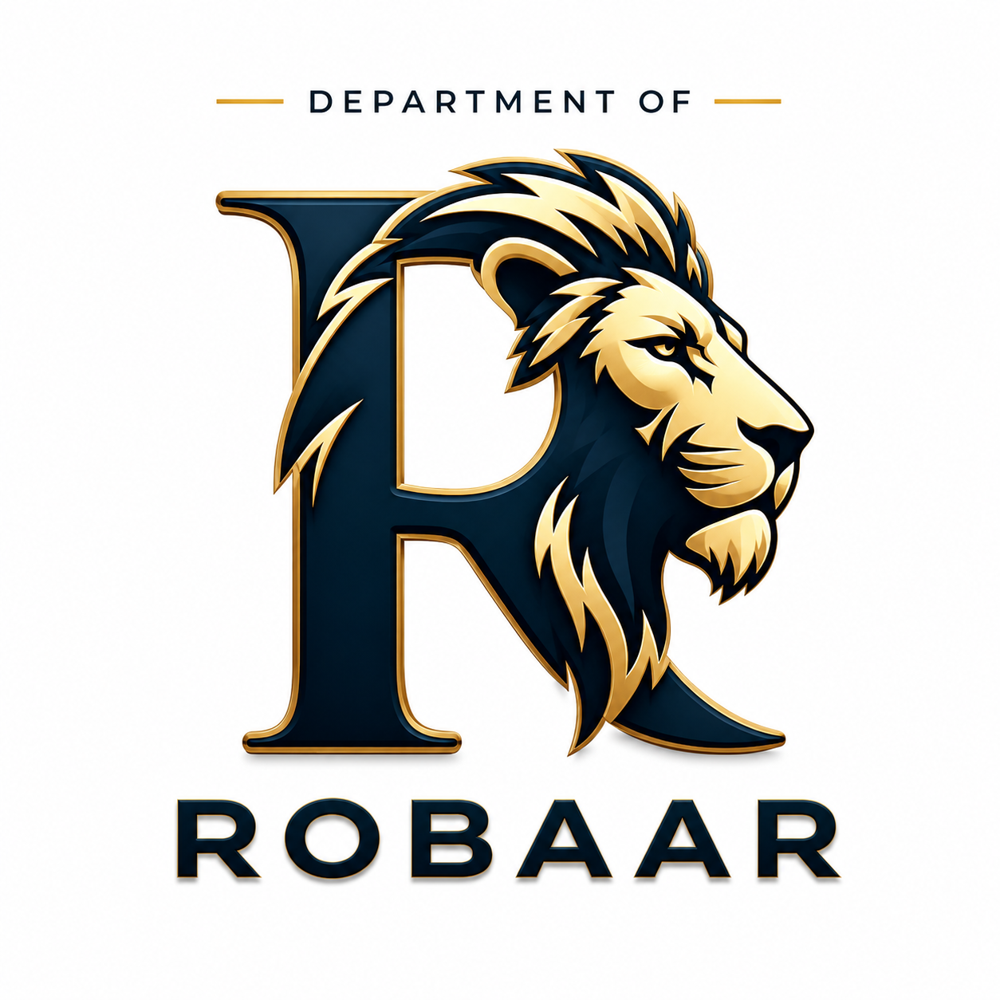

01 / 05
Robaar
PUBLIC AFFAIRS & TECHNOLOGYTechnology designed to help people understand, share and work toward solving public problems.
Robaar is focused on public-facing technology and civic participation. It explores ways to make public issues easier to communicate, discover and support through digital systems.